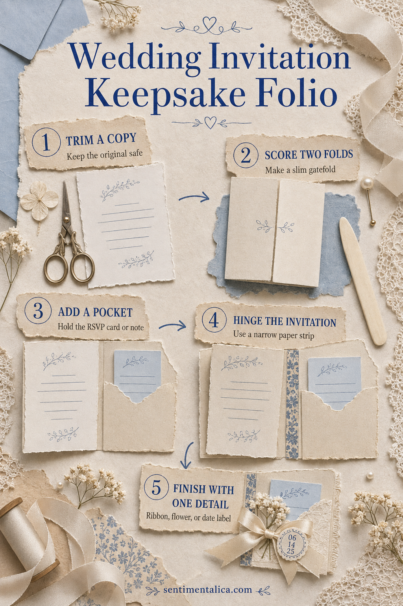

A wedding invitation is often too meaningful to hide in a box, but too formal to glue straight onto a scrapbook page. A small keepsake folio gives it a place of its own. It opens like a quiet little ceremony, protects the original, and leaves room for the RSVP card, ribbon, place card, or a few private sentences.
This version uses a copy of the invitation for the moving part. Keep the original untouched in the pocket, especially if the paper is embossed, letterpressed, or fragile.
Gather a small, calm set of materials
You need medium-weight cardstock, a narrow strip of lighter paper for the hinge, a scoring tool, ruler, paper-safe adhesive, and one decorative finish. Add a small envelope or make a simple pocket from a rectangle of paper.
Choose cardstock about 12–18 mm larger than the invitation on every side. That margin creates protection and makes the finished piece feel intentional. Before cutting anything precious, make a plain-paper test.
Trim a working copy
Photograph or scan the invitation and print a copy at its original size. Trim it neatly, then set the original aside. The copy can be hinged, handled, and lifted without worrying about cracked ink or torn fibers.
Score the gatefold
Place the copy in the center of the cardstock. Mark two fold lines so the side panels meet with a slim 2–3 mm gap rather than overlapping. Score before folding. Run a bone folder along the crease once, using light pressure; repeated hard burnishing can make pale cardstock shiny.

Add the pocket before the invitation
Cut a pocket panel deep enough to hold the original invitation without covering its top edge. Apply adhesive only along the two sides and bottom. Let it dry with a spare piece of card inside so accidental glue cannot seal the pocket shut.
If you are saving several small things, divide the pocket with one stitched or glued vertical line. Keep it shallow enough that every item can be removed without tweezers.
Make a gentle paper hinge
Cut a paper strip about 20 mm wide and slightly shorter than the invitation. Fold it lengthwise. Attach one half to the back of the printed copy and the other half to the folio base. Leave a hairline gap at the fold so the invitation lifts easily instead of pulling against the cardstock.
Finish with one meaningful detail
Choose only one: the date on a tiny label, a narrow piece of ribbon, a pressed flower from a related bouquet, or a scrap of envelope liner. One personal detail will feel more tender than a cluster of generic wedding decorations.
Before closing the folio, write one sentence beneath the hinged copy: where you were when the invitation arrived, what you noticed first, or what you hope to remember. The hidden sentence is what turns the project from storage into memory keeping.
Let all adhesive dry fully, then open and close the folio three times. Nothing should catch, bow, or pull. If the pocket is tight, trim the stored copy rather than forcing it. If the gatefold springs open, place the folio under a light book overnight.
The finished piece can live inside a scrapbook, memory box, or larger wedding journal. It is small enough to make in one sitting, but spacious enough to hold the paper details that would otherwise drift apart.
For more gentle paper projects, browse the Sentimentalica journal.